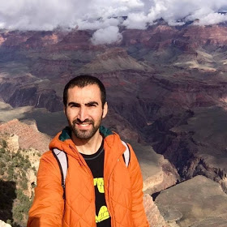

About Me
Hi! I am Mesut Sipar. I am originally from Turkey and I have been in the U.S for the last 3 years. I am a Full Stack Web Developer Student at the Northwestern University. I graduated with a Bachelors Degree in Economics from Dumlupinar University in Kutahya, Turkey. Now I live in Chicago with my dog Kamlo.I have worked in many different industries. I have experience working the restaurant industry as a cook, waiter and busser. I also have experience working at my family business as a tailor with my father. I don’t have an experience as a web developer but I am learning and excited to start this new career.
Connect with Me